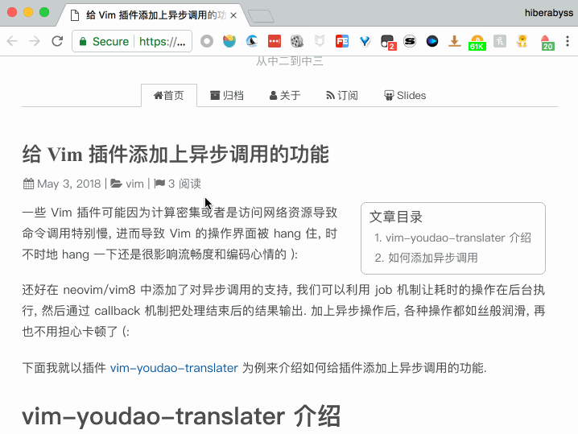

利用 Surfingkeys 快速分享博客到开发者头条或掘金
条评论为了能给博客增加访问量 (虽然访问量依然很低 [捂脸]), 我经常会把写好的博客分享到开发者头条和掘金.
之前是装了开发者头条和掘金的 Chrome 插件, 每次都分别需要点一下插件进行分享. 但单单是为了分享文章就要装两个插件也是很不值得了, 而且这两个插件平时也基本都用不上, 我也是一般都是在分享完博客之后就把它们关闭了. 这里强烈安利一款 Chrome 插件 Steward, 号称是 Chrome 上的 Alfred , 通过它可以很方便地开启或者关闭某个特定插件.
后来发现通过插件进行分享时只是简单地打开了一个网页, 同时添加上了你博客的网址和标题. 就是类似下面这样一个网址:
https://toutiao.io/contribute?url=your_blog_url_encoded&title=your_blog_title_encoded |
打开网页谁不会呀, 只要能获取到页面的 url 和 title . 这时想起我常用的 Chrome 插件 Surfingkeys 提供了映射特定的按键到某个 javascript 函数的功能, 通过 javascript 来获取页面的 url 和 tile 就再容易不过了! 当我们实现这个 javascript 函数之后 就能按几个键打开开发者头条和掘金的分享页面了, 说干就干, Let’s start to hack it out!
Demo
先让大家看下最终效果是什么样子的吧, 这样才更有动力!

当在我的一篇博客上按 pub 三个按键时可以看到开发者头条和掘金的分享页面就被自动打开了! 如果你也想实现一样的效果就可以接着往下看了.
Surfingkeys 介绍
Surfingkeys 是一款开源的能让你用 Vim 的方式操作网页的 Chrome 插件.
例如你可以通过 j/k 来上下翻滚网页, 通过 E/R 来左右切换 tab 页, 通过 yy 来复制当前网页的标题, 通过 ymc 来复制列表的某个 column 等, 甚至还可以通过 yG 来给整个网页截屏. 总之, 这个插件很强大, 你可以通过 ? 来查看它所有的默认按键.
我之前也用过别的类似的插件, 如 cVim, Vimium 等, 但它们要么功能不够丰富, 要么有时 Scroll 的时候会有问题, Surfinkeys 是目前所有这类插件中我觉得最好用的!
添加按键映射
安利完 Surfingkeys 后我们来看下怎么添加我们想要的按键映射吧.
首相我们需要打开 Surfkingkeys 的 设置 页面. 在设置页面中添加以下代码:
mapkey('pub', 'publish page into Juejin or Toutiao', function() { |
好了, 大工告成, 现在我们在任意一个页面按 pub 之后便会自动打开开发者头条和掘金对 这个网页的分享页面.
Future
自己在用 Hexo 写博客的时候实现了一些 Vim 命令, 可以新建博客, 启动 hexo server, 部署, 打开当前博客对应的网页等. 可以考虑在有时间的时候把这些命令封装成一个 vim 插件, 到时也可以考虑添加上这个分享博客的命令.
推荐阅读
- 本文链接：https://hiberabyss.github.io/2018/05/03/surfingkeys-blog-share/
- 版权声明：本博客所有文章除特别声明外，均采用 CC BY-NC-SA 3.0 CN 许可协议。转载请注明出处！